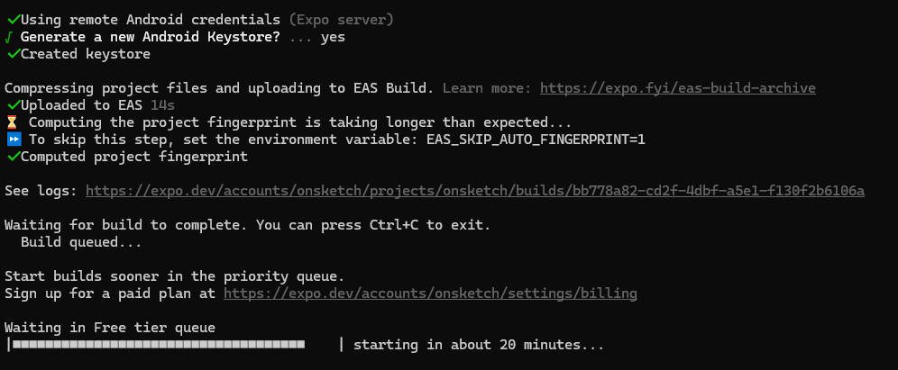
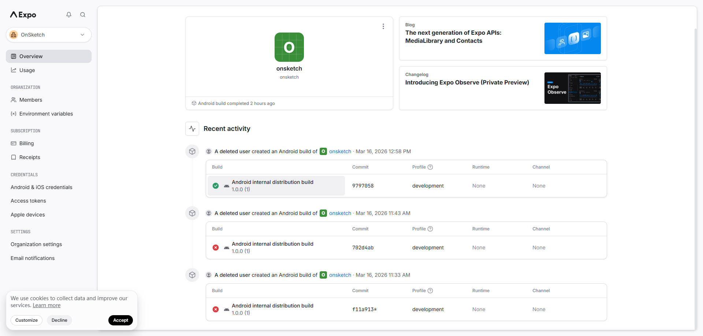
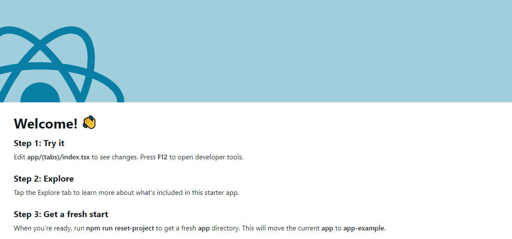

Reactive Native 和 Expo 初体验（一） #
初次尝试用 Reactive Native 尝试手机开发，简单记录一下
官方推荐的是使用 Expo 框架进行 RN 开发，Expo 提供了很强的开发工具，能够让 App 的开发过程变得更方便，这里就不在赘述了。
项目构建 #
我的 node 版本：
$ node -v
v20.19.6
项目脚手架：
$ npx create-expo-app@latest
该命令可以快速创建一个基于 expo 的 reactive native 项目。
打包一个 HelloWorld #
官方提供两种开发方式：
- expo go: 适合学习使用。
- development build：适合开发需要上线的应用，创建一个用于开发的安装文件，里面包含一些开发工具。
我选择了 development build 这种方式。
首先在 Expo 注册一个账号，注意账号名不要包含特殊符号，否则开发时可能会出现莫名其妙的问题，建议只用字母。
安装 EAS CLI:
$ npm install -g eas-cli
使用提前注册好的 Expo 账号在终端登录 ：
$ eas login
配置项目：
$ eas build:configure
Expo 有一个后台专门负责管理 app 的，所以本地项目需要配置，配置后可以利用 Expo 服务提供的能力，比如手机远程调试预览项目，Expo 云端构建 app 等等
创建 Build，下面的命令会通过 Expo 云端构建一个安卓 app 的包，可以登录账号查看 build 记录。
$ eas build --platform android --profile development
Expo 的 EAS Build (免费版) 需要排队，比较恶心，但是能够理解公司，毕竟需要占用服务端的资源。

可以选择升级到 Expo 的付费计划（Production Plan，每月 $29 起）。这将让你进入优先队列，通常几秒钟内就能开始构建。也可以选择本地构建：
eas build --local --platform android
# 或者
eas build --local --platform ios
构建 Android 需要安装 Android Studio 和 JDK 构建 IOS 需要你有 mac 电脑并安装 Xcode
安装 Build，build 完成后，终端会显示一个 QRCode，用手机扫描后打开网页，下载安装包 .apk 文件，进行安装。
在 Expo 后台可以看到 build 记录

开发 #
安装 Apk 后，在项目终端启动服务：
$ npx expo start
...
› Metro waiting on
exp+onsketch://expo-development-client/?url=https%3A%2F%2Fmwikwww-fangyann-8081.exp.direct
› Scan the QR code above to open the project in a development build. Learn more:
exp+onsketch://expo-development-client/?url=https%3A%2F%2Fmwikwww-fangyann-8081.exp.direct
› Scan the QR code above to open the project in a development build. Learn more:
https://expo.fyi/start
› Web is waiting on http://localhost:8081
› Using development build
› Press s │ switch to Expo Go
› Press a │ open Android
› Press w │ open web
› Press j │ open debugger
› Press r │ reload app
› Press m │ toggle menu
› shift+m │ more tools
› Press o │ open project code in your editor
› Press ? │ show all commands
启动后，终端会显示一个 QRCode，使用 Expo Go 扫描即可打开 app 进行调试。
这个命令需要手机设备和电脑在同一 wifi 下，
Expo 也支持 web 端 Web is waiting on http://localhost:8081，打开这个地址，就可以显示 App 了。

过程中的问题和思考 #
Android Application ID 是什么？ #
appId 是安卓应用在 google play 商店和安卓设备上的唯一身份标识，是 App 的身份证号码。
- 格式：通常采用反向域名格式（Reverse Domain Name Notation）。
- 示例： com.yourcompany.appname (例如：com.facebook.katana, com.tencent.mm)
- 规则：必须至少包含两个部分（用点号分隔），只能包含字母、数字和下划线，不能以数字开头。
- 一旦发布到 Google Play，就绝对不能更改（如果改了，就被视为一个全新的应用，用户无法更新旧版）。
可以在 Expo 的 app.json 中配置，建议 ios.bundleIdentifier 和 android.package 保持一致。
{
"expo": {
"name": "我的应用名称",
"slug": "my-app-slug",
"version": "1.0.0",
"android": {
"package": "com.yourcompany.yourappname",
"versionCode": 1
},
"ios": {
"bundleIdentifier": "com.yourcompany.yourappname"
}
}
}
- 在 Expo Go (开发阶段): 在使用 Expo Go App 预览时，你可以不设置它，因为它运行在 Expo 的壳子里。
- 构建 (EAS Build / Prebuild): 当你准备打包成 APK/AAB 文件，或者运行 npx expo prebuild 生成原生 android 目录时，必须设置它。如果你不设置，构建工具会报错提示你缺少 android.package。
它的重要性：
- 唯一性： 全球所有的安卓应用，包名都不能重复。Google Play 会拒绝上传与现有应用包名冲突的应用。
- 服务绑定： 很多第三方服务（如 Google Maps API, Firebase, 微信登录/支付）都需要你在后台填入这个包名来验证身份。如果包名不匹配，这些功能将无法使用。
- 应用更新： 手机是通过包名来识别这是“同一个应用的更新”还是“另一个新应用”的。
version code 是什么？ #
versionCode 是安卓（Android）系统用来判断“哪个版本更新”的一个整数。它和我们在 App Store 看到的“1.0.0”这种版本号不一样。
安卓应用有两个关于“版本”的字段，version 和 versionCode。
version (或 versionName):
- 给用户看的。比如 1.0.0, 2.5.1。
- 主要用于展示，用户看到这个知道功能更新了。
versionCode:
- 给系统和应用商店看的。必须是一个整数（如 1, 2, 3, 100）。
- 规则：每次发布新版本，这个数字必须比上一次大。如果不比上一次大，手机会拒绝安装（认为不是更新），谷歌商店也会拒绝上传。
首次使用 EAS（Expo 云端构建服务）构建时，在云端没有找到项目的历史版本记录，EAS 为了方便管理，会自动接管这个号码，默认从 1 开始计数。以后当你再次运行 eas build 时，EAS 会自动把这个数字变成 2，下次变成 3，以此类推。这样就不用每次都手动去 app.json 里修改它了，非常方便。
keystore 是什么？ #
Keystore（密钥库）是一款 APP 的“身份证”和“私章”。它是 Android 开发中非常关键的一个文件（通常以 .jks 或 .keystore 结尾），主要有两个作用。
1. 证明你是开发者 (身份认证) #
当你的 APP 发布到应用商店（如 Google Play）或者是安装到手机上时，安卓系统会检查这个 Keystore。
- 如果不一致：如果别人想伪造你的 APP，但他没有你的 Keystore，那么他的 APP 就无法覆盖安装你的旧版本。
- 防止篡改：它保证了只有你（拥有 Keystore 的人）才能发布这个 APP 的后续更新。
2. 对代码进行加密签名 #
Keystore 会对你的代码包（APK 或 AAB）进行数字签名。这就像是在文件上盖了一个私章，证明“这个 APP 是原厂出品，中间没有被篡改过”。
在进行 Expo 项目配置时，EAS CLI 会提问：Generate a new Android Keystore?
如果是新的项目。
- 选择：Yes (输入 Y 或直接按回车)。
- 后果：EAS 会在云端帮你自动生成一个全新的、安全的 Keystore，并保存在 Expo 的服务器上。
- 优点：非常省心，你不需要自己管理繁琐的证书文件。强烈推荐！
如果我们是在接受旧项目/迁移项目
- 场景：如果这个 APP 已经在应用商店上架过了，或者之前同事已经生成过 Keystore 了。
- 选择：No (输入 n)，然后上传你已有的文件。
- 后果：如果你生成了新的（选了 Yes），那么新打出来的包无法覆盖安装旧版本的 APP，应用商店也会拒绝更新。
EAS 构建等待 20 分钟 #
在 build 时遇到了云端构建需要等待 20 分钟。
遇到这个问题，我们不必等着，关闭终端窗口并不会终止 build，仅仅是断开了你本地终端与 Expo 云端服务器的日志连接，云端的构建任务（包括排队状态）依然会在 Expo 的服务器上继续进行。
- 任务仍在继续
- 查看进度：可以在 Expo 后台查看 build 进度
- 构建完成后：会收到邮件通知，也可以随时访问 Expo 官网 Dashboard 下载安装包(.apk，.aab 或者 .ipa)
Expo Go 版本过低 #
在 google play 上下载 Expo Go 后，扫描 Expo Go 二维码提示：" This project requires a newer version of Expo Go。"
表示从 google play 上安装的 Expo Go 版本过低：项目用的 Expo SDK 版本太新了，商店里的 Expo Go 还没来得及更新支持它。
建议直接从官网下载最新版：expo.dev/tools
（完）